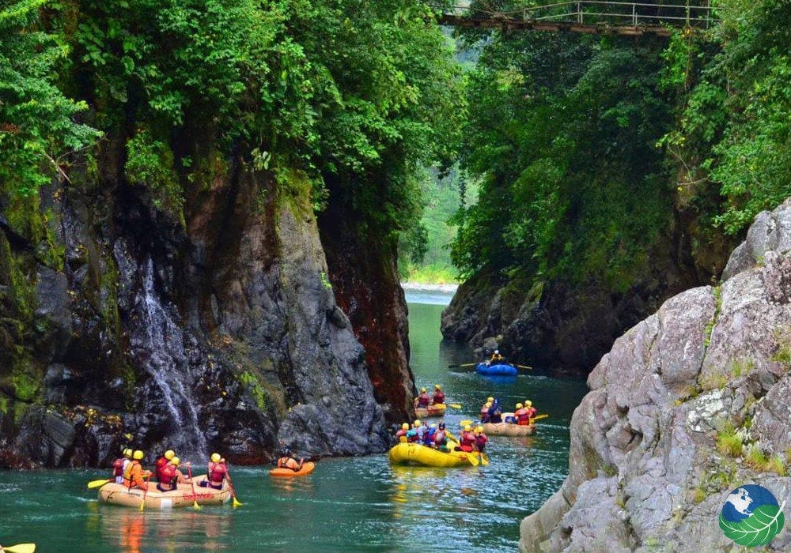
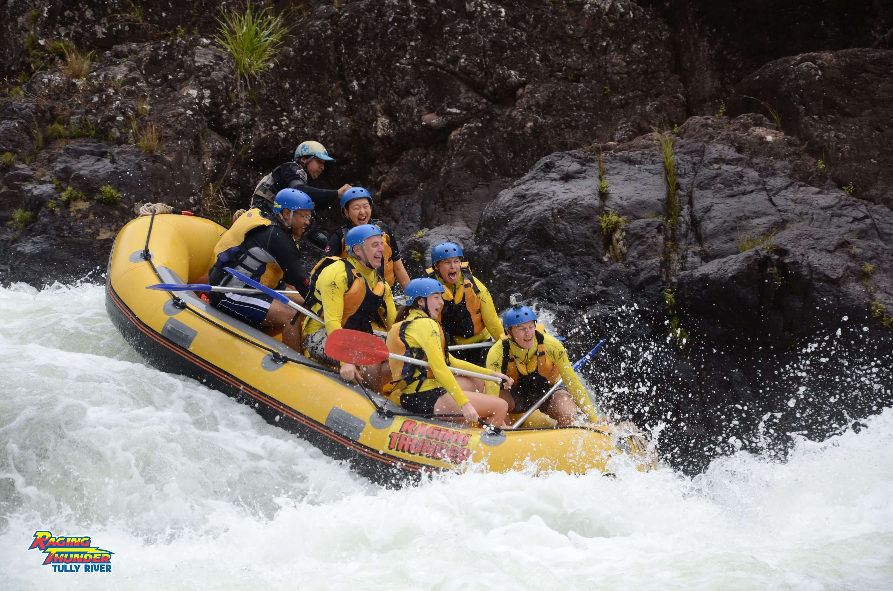
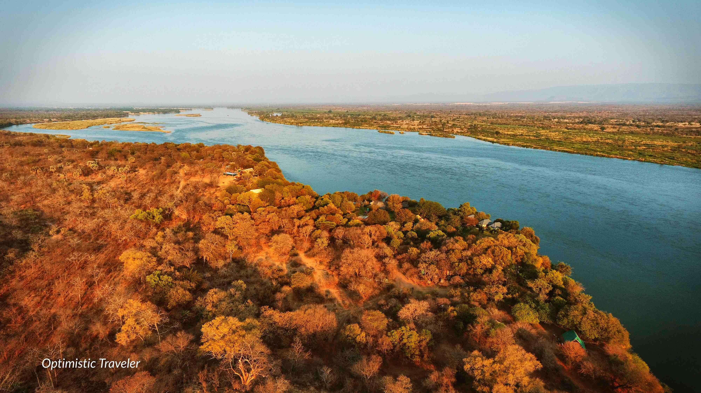
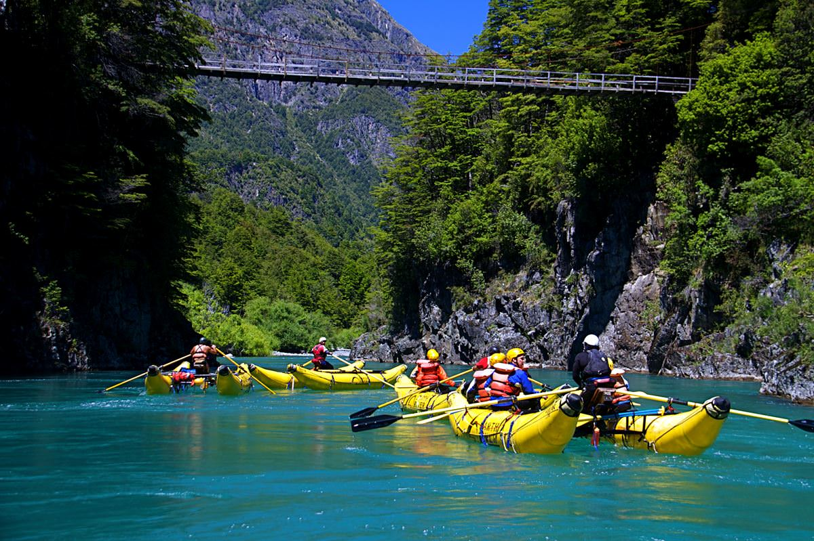

Have An Adventure
Make Memories with Dry Oar
Pacuare River
The first known river running of the Pacuare was done by a group of Polish kayakers traveling the length of Central America on their way to South America in the winter of 1980/81. The first rafting expedition was in Feb 1981 and the party was composed of Nick Hershenow, Sharon Hester, Jerry Kaufman (all USA) and Rudy Koller (Canada). Sharon Hester and Nick Hershenow were rafting guides for Michael Kaye of CREAR. This expedition used a 3.7 metres (12 ft) Avon Redshank and Rudy mostly kayaked in a Holloform.
Tully River, Queensland, Australia
The Tully River rises in the Cardwell Range, part of the Great Dividing Range on the northern boundary of the Kirrama State Forest. The river flows generally north through Lake Koombooloomba and flows over the Tully Falls near Ravenshoe and descends through the Tully Gorge within the Tully Gorge National Park, part of the UNESCO World Heritage–listed Wet Tropics site. Below the dam wall, the river is joined by five minor tributaries before emptying into the Coral Sea at Tully Heads. The river descends 800 metres (2,600 ft) over its 133-kilometre (83 mi) course.
Zambezi River, Zimbabwe
The Zambezi River (also spelled Zambeze and Zambesi) is the fourth-longest river in Africa, the longest east-flowing river in Africa and the largest flowing into the Indian Ocean from Africa. The area of its basin is 1,390,000 square kilometres (540,000 sq mi), slightly less than half of the Nile's. The 2,574-kilometre-long river (1,599 mi) rises in Zambia and flows through eastern Angola, along the north-eastern border of Namibia and the northern border of Botswana, then along the border between Zambia and Zimbabwe to Mozambique, where it crosses the country to empty into the Indian Ocean.
Futaleufú River, Chile
The Futaleufú River is fed by a chain of lakes in the Los Alerces National Park in Chubut Province, Argentina. The name, Futaleufú, is given to the river below the Futaleufú Dam and Amutui Quimey Reservoir. The watershed drains the Southern Andes Mountains from Argentina into Chile and drains into Yelcho Lake. From this point the river is renamed Rio Yelcho and continues to its mouth at the Pacific Ocean. From its source in Argentina, the river flows 35 kilometres (22 mi) to the Chilean border and enters the Palena Province, in Los Lagos Region. Whitewater enthusiasts generally paddle the Chilean side of the river.